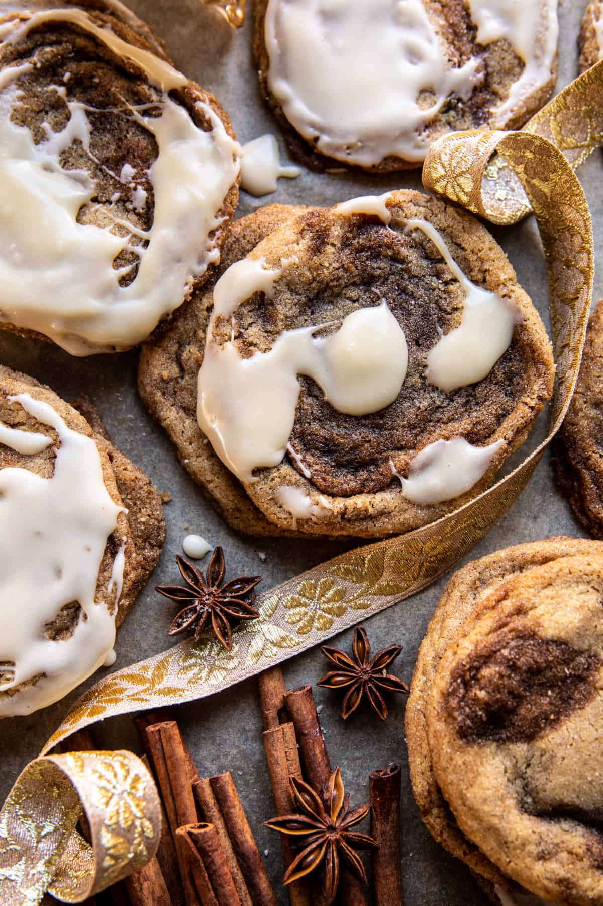

Frosted Cinnamon Swirl Snickerdoodles

Description
This is a fantastic recipe for those who enjoy Snickerdoodles
but also need some icing in their life.
Ingredients
Cinnamon Swirl
- 1/2 cup dark brown sugar
- 4 tablespoons salted butter, at room temperature
- 2 teaspoons cinnamon
Cookies
- 2 sticks (1 cup) salted butter, at room temperature
- 3/4 cup dark brown sugar
- 2 large eggs
- 2 teaspoons vanilla extract
- 2 1/4 cups all-purpose flour
- 1 teaspoon baking soda
- 1/2 teaspoon kosher salt
- 1/3 cup granulated sugar
- 2 teaspoons cinnamon
Icing
- 2 ounces cream cheese
- 2-3 tablespoons milk
- 1 teaspoon vanilla extract
- 1 1/2 cups powdered sugar
Steps
- To make the cinnamon swirl. In a bowl, mix the butter, brown sugar,
and cinnamon. Line a small baking sheet with parchment. Crumble/tear
the cinnamon mix over the baking sheet, creating small chunks, no more
than 2 teaspoons in size. They should be small like chips. Freeze 10
minutes, until firm.
- To make the cookies. Add 1 stick butter to a skillet set over medium
heat. Cook until the butter begins to brown, about 3-4 minutes. Remove
from the heat and transfer to a heatproof bowl. Freeze 10-15 minutes,
but no longer.
- Preheat the oven to 350° F. Line a baking sheet with parchment paper.
- In a bowl, beat together the remaining stick of butter, the cooled
browned butter, and the brown sugar until combined. Beat in the eggs,
1 at a time, until combined. Add the vanilla, beating until creamy. Add
the flour, baking soda, and salt. Fold in the frozen cinnamon chunks.
- Mix the sugar and cinnamon in a bowl. Roll the dough into rounded
tablespoon size balls and then roll through the cinnamon sugar. Place 3
inches apart on the prepared baking sheet.
- Bake for 8 minutes, rotate the pan and bake another 1-3 minutes or
until the cookies are just beginning to set on the edges but still doughy
in the center. Let the cookies cool on the baking sheet. They will
continue to cook slightly as they sit.
- Meanwhile, make the icing. Melt the cream cheese in the microwave,
stirring until smooth, 15-20 seconds. Whisk in the milk and vanilla. Add
the powdered sugar, whisking to combine. Add milk, if needed, to thin.
Spread or drizzle each cookie with icing. Eat warm or let cool and store
in an airtight container for up to 4 days. The icing will harden/dry
enough to stack.
Home